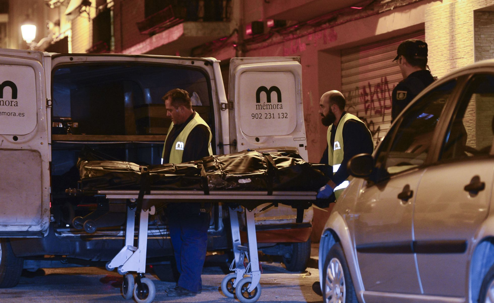

El primer mes del año termina como uno de los eneros con más mujeres asesinadas por la violencia machista, con ocho víctimas mortales. Solo en uno de los últimos 14 años —en 2006 hubo nueve asesinadas— ha habido más fallecidas a manos de sus parejas o exparejas que en el comienzo de este 2016.
La cifra es la misma que se produjo en 2003, 2011 y 2012, lo que indica que cambios legislativos como la Ley Integral contra la Violencia de Género, aprobada por el Congreso en 2004, no han frenado el número de asesinatos, aunque se hayan introducido instrumentos para mejorar la atención a las víctimas. Las mujeres que sufren malos tratos utilizan cada vez más herramientas como el 016, el teléfono gratuito y anónimo de atención a las víctimas puesto en marcha en 2007, que el pasado año tuvo un récord de llamadas con casi 82.000.
A las ocho mujeres asesinadas hay que sumar el caso de Alicia, el bebé de 17 meses que fue arrojado por la ventana en Vitoria por un hombre de 30 años que también agredió a la madre de la pequeña, una mujer brasileña de 18 años que tuvo que ser hospitalizada.